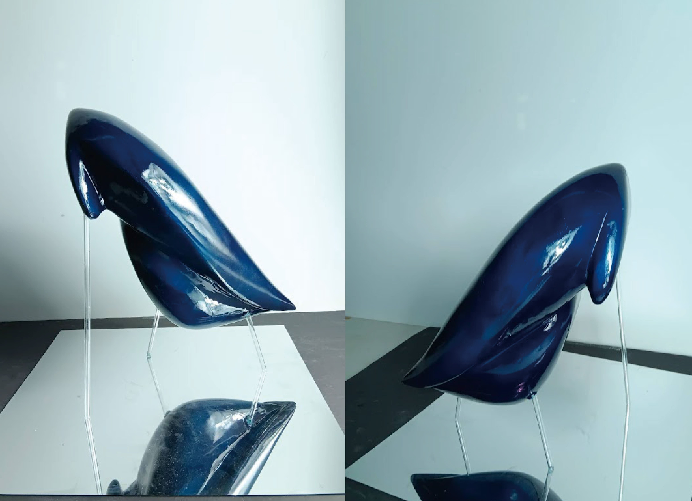

青鳥
立體模型／PU／批土／噴漆
製作與思考
「青鳥」以鳥類飛行的姿態作為核心意象，透過簡化與拉伸的造型語言，表現出輕盈、流動與方向感。作品不追求寫實的外觀，而是將鳥的形體轉化為一種向前延展的輪廓，象徵自由、移動與內在狀態的投射。 在造型設計上，我刻意拉長身體比例並弱化細節，使視覺重心集中於整體動勢，而非局部裝飾。翅膀與身體之間的曲線連續性，是整體視覺的關鍵，讓作品在靜止狀態下仍保有「即將起飛」的張力。 材質與表面處理上，透過亮面處理強化光線在表面的流動，使作品在不同角度下產生變化，進一步強調飛行意象所帶來的輕盈感。整體製作過程需要反覆調整曲面比例與支撐結構，在視覺平衡與結構穩定之間取得最佳狀態。 「青鳥」並非單純描繪鳥的形象，而是一件將情緒與狀態轉化為立體造型的作品，希望觀者能從中感受到向前、向上的力量。